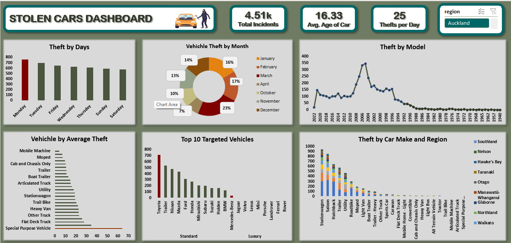

Excel / Police vehicle-interest records
New Zealand: vehicle theft patterns
Recorded theft patterns by weekday, vehicle characteristics and region, with a clear distinction between counts and risk.

Business question
Which vehicle characteristics, locations and days appear most often in the recorded theft data? The project identifies New Zealand Police vehicle-interest records as its source.
Approach
The published workflow joins vehicle, make and location tables, corrects date types and derives calendar fields and vehicle age. It removes records with missing descriptive attributes. The dashboard displays 4,510 retained incidents and an average vehicle age of 16.33 years.
What the dashboard shows
Monday has the largest recorded weekday count and Saturday the smallest in the saved view. Toyota leads the make comparison. Station wagons and saloons feature prominently in the body-type analysis. Auckland and Canterbury have large recorded counts. The model-year distribution is concentrated in older vehicles, around the mid-2000s.
Recommended decisions
Use the weekday pattern to guide further prevention analysis and outreach scheduling. Review high-count vehicle groups for practical security guidance. Before assigning regional resources, normalize incident counts by registered vehicles or another defensible exposure measure. Audit excluded records to see whether missing details change the rankings.
Interpretation limits
The model-year chart describes when vehicles were manufactured, not when thefts occurred: it does not show a theft spike in 2005. High counts do not establish high theft probability without vehicle-population denominators. The source describes a six-month window, while the visual spans seven named calendar months; exact date boundaries are not available here. Recommendations are proposals, not measured interventions.
Source: My original Maven Showcase project ↗. Analysis accompanies the published dashboard; source workbooks are not included.